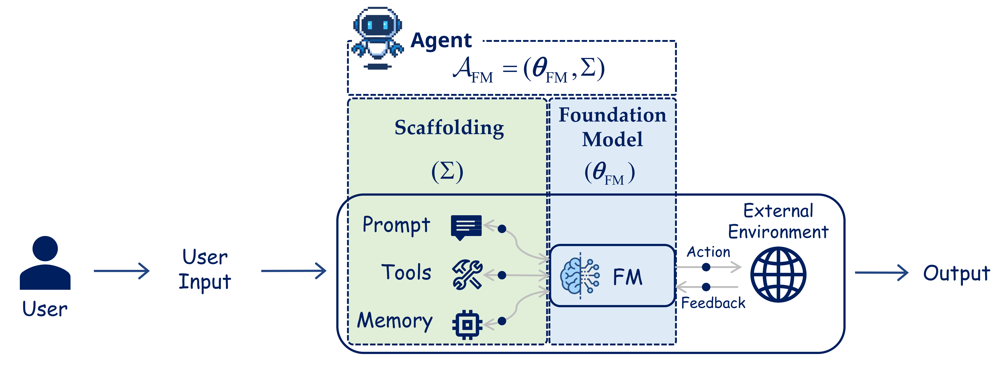

Definition & Overview
Foundation Model Based Agentic Systems

A component-level view of an FM-based agent: model, prompt, tools, memory, and environment loop.
Self-Improvement Loop (Our Focus)

Foundation Model Improvement
Scaffolding Improvement
Comparison of traditional agentic workflows vs. self-improving paradigms analyzed in this survey.
Tip: Click on images to view in full size.